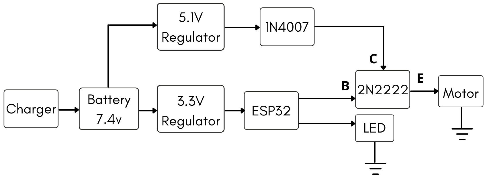
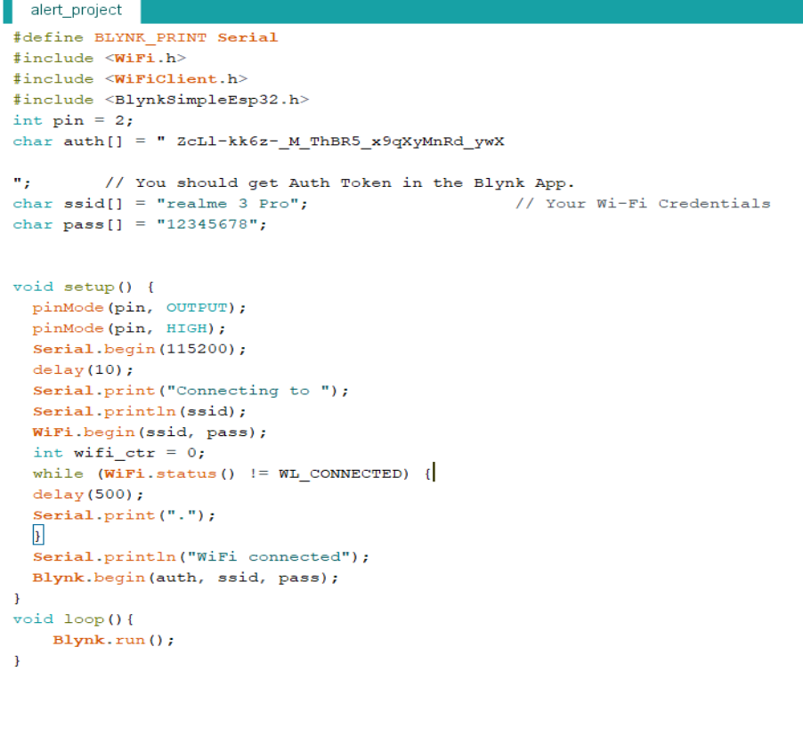
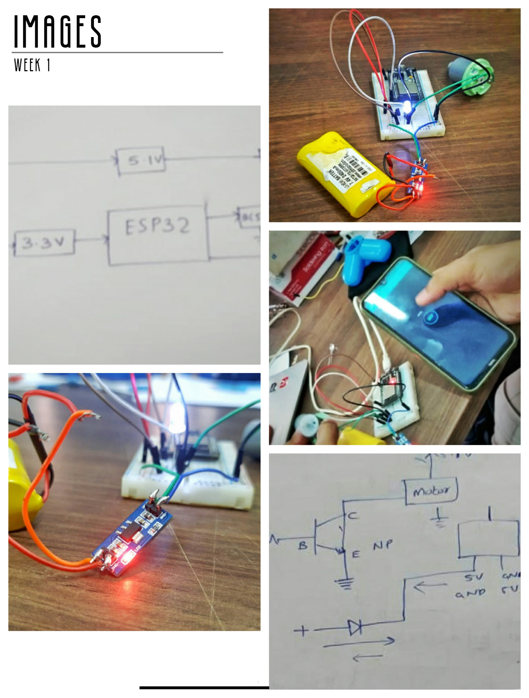

WEEK 1
April 10 2021
Our first task to create a circuit diagram and choosing the right components according to the specifications. I learned about each unit, its uses, and its working one by one. Then after few attempts in creating the perfect circuit diagram for our Alert System, we finalized one with the help of Amith Sir. The final version of the circuit diagram is shown below.
Circuit Diagram

The next task of the day was to assemble the circuit on a breadboard. With the help of the circuit diagram, it was pretty much easier to do it. First, we used only the motor in the circuit. Then we connected the ESP32 with the interface created in Blynk App to ensure it is working.
#define BLYNK_PRINT Serial
#include
#include
#include
int pin = 2;
char auth[] = "pGw0NoqVl6aWtT56tG1LPZdYDMQUAHPS"; // You should get Auth Token in the Blynk App.
char ssid[] = "realme 3 Pro"; // Your Wi-Fi Credentials
char pass[] = "12345678";
void setup() {
pinMode(pin, OUTPUT);
pinMode(pin, HIGH);
Serial.begin(115200);
delay(10);
Serial.print("Connecting to ");
Serial.println(ssid);
WiFi.begin(ssid, pass);
int wifi_ctr = 0;
while (WiFi.status() != WL_CONNECTED) {
delay(500);
Serial.print(".");
}
Serial.println("WiFi connected");
Blynk.begin(auth, ssid, pass);
}
void loop(){
Blynk.run();
}
Later, we connected a LED bulb and a buzzer to ensure we are getting vibration, light, and sound alerts.
